Press
Reviews, press kit and high-resolution photographs of the Italian tenor Massimo Giordano.
On the cover
Das Opernglas, June 2013
“Mein Weg ist voller Wunder” — my path is full of wonders: that was the cover. Inside, a five-page interview in the June 2013 issue, the year of Amore e Tormento, with photographs by Marisa Crawford.
The headline the magazine gave the interview is a line of his own: as a singer you hand over yourself, you turn your inside out. It came from a question about the difference between the instrumentalist and the singer — a difference he knows from both sides.
Cover and five pages, as they appeared. Interview by Dr. Andreas Laska, photographs by Marisa Crawford. © Das Opernglas, June 2013. Click to open, or download the whole interview as a PDF (6 pages, 1 MB).
“Massimo Giordano, a bright-voiced Italian tenor… warmed to some ardent, expressive singing, sounding genuinely enamored in ‘De’ miei bollenti spiriti’.”
Vivien Schweitzer · The New York Times · 21 October 2008 · La traviata, Metropolitan Opera, with Anja Harteros, Paolo Carignani
“Young Rinuccio, the appealing tenor Massimo Giordano, urges them to turn to the town’s shrewdest citizen, Gianni Schicchi.”
Anthony Tommasini · The New York Times · 23 April 2007 · Il trittico, Metropolitan Opera, James Levine, new production by Jack O’Brien
“Dwayne Croft was a vivid Ford and Massimo Giordano an uncommonly virile Fenton.”
George Loomis · International Herald Tribune / The New York Times · 22 August 2001 · Falstaff, Salzburg Festival, Lorin Maazel, Declan Donnellan production
“Massimo Giordano triompha également de l’impossible rôle de Samson, qu’il incarne avec beaucoup de vaillance, notamment dans un superbe « Air de la meule ».”
Emmanuel Andrieu · Opera Online · 22 October 2020 · Samson et Dalila, Opéra national du Rhin
“When I heard him play I knew: I will never play like that. So I shut the flute case for good and gave myself to singing alone. A decision I have never regretted.”
On the international competition at Duino Castle, where he heard a boy his own age play: Emmanuel Pahud, now principal flute of the Berliner Philharmoniker
“I didn’t want to. Singing meant nothing to me, it always struck me as something external. But he kept on until I started Core ’ngrato.”
Aged seventeen, shortly before his flute diploma. Days later he sat the entrance audition for the singing class, never having had a lesson
“I am convinced Cavaradossi does not believe in Scarpia’s pardon for a second. Tosca is elated, dreaming of their future; he seems to go along with it because he will not destroy that dream — and he knows perfectly well it is all in vain.”
On the third act of Tosca. The role was opened to him by Franco Zeffirelli
“He was genuinely afraid of walking on stage. And he turned that fear into expressive power.”
On Franco Corelli. The other model is Alfredo Kraus: “the elegance of his singing, his way of shaping a phrase, marked an entire era”
The interview also tells of his first concert, months into his studies, standing in for a tenor who had withdrawn, with Carlo Cossutta warming up in the next dressing room; the 1997 Spoleto competition and the Clemenza di Tito that came as its prize; the invitation from Paolo Barbacini to Parma as second cast to Giuseppe Sabbatini in Werther; and one wish still unfulfilled at the time: to sing Andrea Chénier.
Press
What the critics wrote
“L’amoroso abbandono di Fenton (Massimo Giordano) per Nannetta (Dorothea Röschmann, anche lei fra le più applaudite), protagonisti del passaggio più lirico e struggente di tutta l’opera.”
Giuseppina Manin · Corriere della Sera · 8 April 2001 · Falstaff, Salzburg Easter Festival, Claudio Abbado
“Beginning with the tenor Massimo Giordano, who was a greatly admired protagonist.”
Luigi Bellingardi · Corriere della Sera · 14 September 1998 · Werther, Teatro Verdi, Terni, Teatro Lirico Sperimentale di Spoleto — his debut
“Avec Massimo Giordano, le personnage de Foresto bénéficie d’une incarnation parfaitement réussie: voix souple de ténor lyrique, belle longueur de souffle, émission aisée dans les différents registres, parfaite maîtrise des difficultés techniques.”
Fabrice Malkani · Forum Opéra · 18 March 2018 · Attila, Opéra de Lyon
“C’est surtout l’interprétation qui surprend et séduit: nous n’avions pas le souvenir d’une telle probité du style, d’un tel soin de la ligne chez le ténor italien.”
Antoine Brunetto · Forum Opéra · 11 February 2018 · Werther, Opéra national du Rhin
“Nicht weniger imponierend ist hier Massimo Giordano als Don Carlos, der mit dramatischer Deklamation agiert.”
Alexander Walther · Online Merker · 28 October 2019 · Don Carlos, Oper Stuttgart
“Giordano looks and sounds the part: young and handsome, he can embody the fervent swagger and heroic self-belief of the painter, and this demeanour is matched by a warm, smooth tone and firm vocal weight.”
Claire Seymour · Opera Today · March 2013 · Tosca, Royal Opera House
“The Italian tenor Massimo Giordano sings Des Grieux with crisp diction and, at his best, a ringing sound. … He is gripping in his aria imploring the captain of Manon’s ship to take him to America with her.”
George Loomis · The New York Times · 21 April 2014
“Massimo Giordano, visually and vocally the perfect Italian tenor, blessed with a touching and easy flowing voice in all ranges, which sounds warm yet also virile.”
Frederik Hanssen · Der Tagesspiegel · 18 April 2014
“Massimo Giordano is a virile, strong Cavaradossi, who cultivates the role, noble, and who sings with exact differentiation in his expression.”
Karlheinz Roschitz · Kronen Zeitung · 19 January 2014
“Massimo Giordano perfectly embodies Des Grieux’s character, with elegance of phrasing and passion.”
Stefano Nardelli · Il giornale della musica · 12 April 2014
News agency
On the wires
- 21 Jun 2025
Festival in Cyprus with the La Scala Quartet, Giordano and Calzi
On the first Minthis Music Festival, conceived and directed by Giordano. “Cyprus is a place strongly marked by an interest in classical music.” ANSA - 2 Sep 2014
Giordano withdraws for surgery on his tibia
Surgery in Ekaterinburg after the 2012 accident. Returned to the stage on 1 November at the Opéra national de Paris as Cavaradossi. ANSA - 29 Aug 2013
Giordano opens the Vienna State Opera
Alfredo in La traviata, 3 September 2013, Marco Armiliato, opening the 2013/14 season. ANSA
In print
World’s Best Tenors
Giordano is one of the forty-four tenors portrayed in World’s Best Tenors, photographed by Johannes Ifkovits with stylist Evelyn Rillé, Opera Rifko Verlag, 2016, 304 pages. Each singer was photographed on his high C and wrote about his own career. The volume runs from Plácido Domingo, José Carreras, René Kollo and Peter Schreier to Jonas Kaufmann, Juan Diego Flórez, Roberto Alagna, Piotr Beczała and Rolando Villazón.
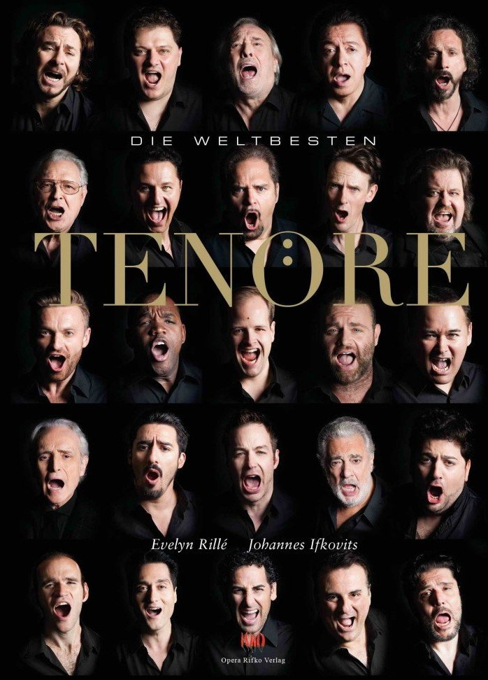
For theatres and press
Press kit
Biography in three lengths, repertoire list and high-resolution photographs, free to use with the photographer’s credit.
- BiographyShort, medium and long, on this site
- RepertoireFull role list with houses
- PhotographsHigh-resolution files on request: press@massimogiordano.com
Biography, repertoire list and five high-resolution portraits, sent by return email.
If the button does nothing, write to press@massimogiordano.com.
Documents
Biography and repertoire as PDF
Biography in three lengths and the full repertoire list, ready to print.
- BiographyDownload · PDF, 249 KB
Three lengths: 60 words, 250 words, full, with a year-by-year timeline - RepertoireDownload · PDF, 236 KB
Roles by composer, with the houses where each was sung
Photographs
High-resolution photographs
Print-ready, up to 5760×3840 pixels. Free for editorial use connected to concerts and performances, with the photographer’s credit.


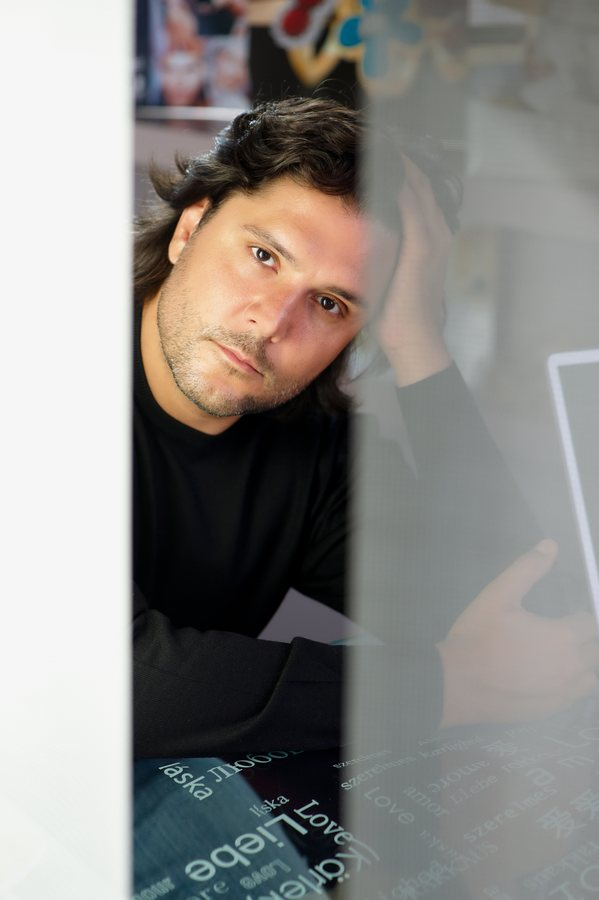

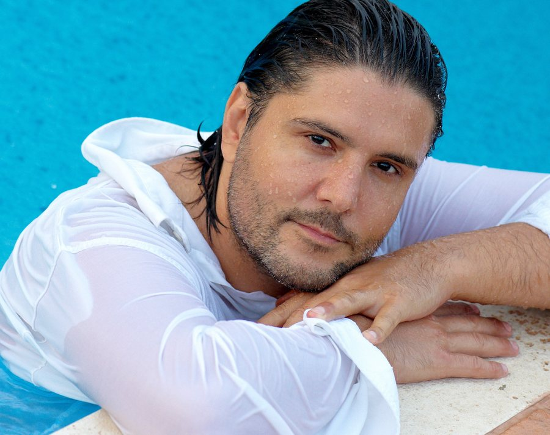
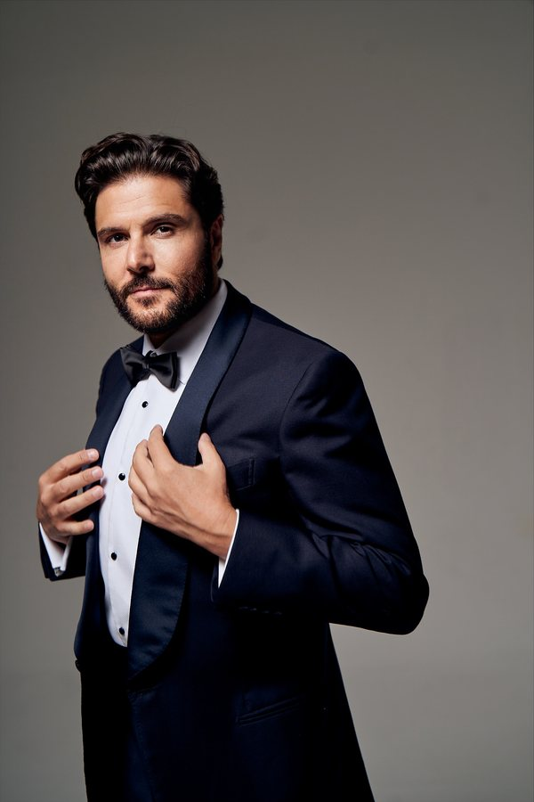
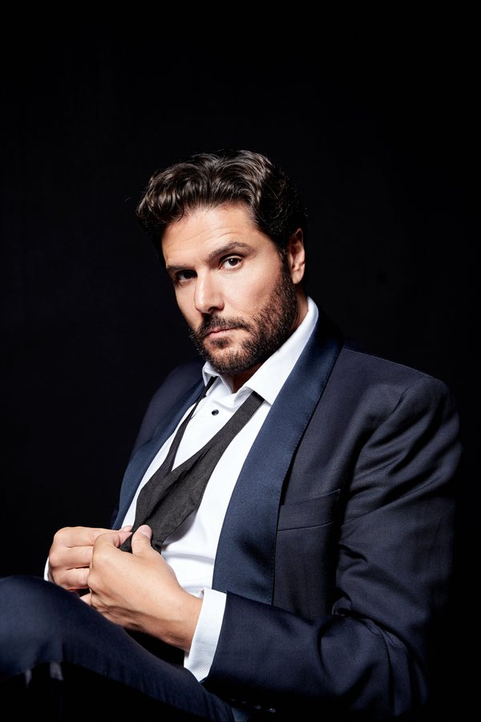


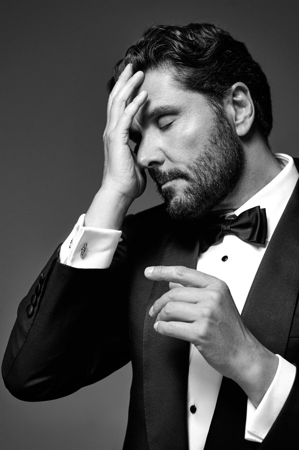

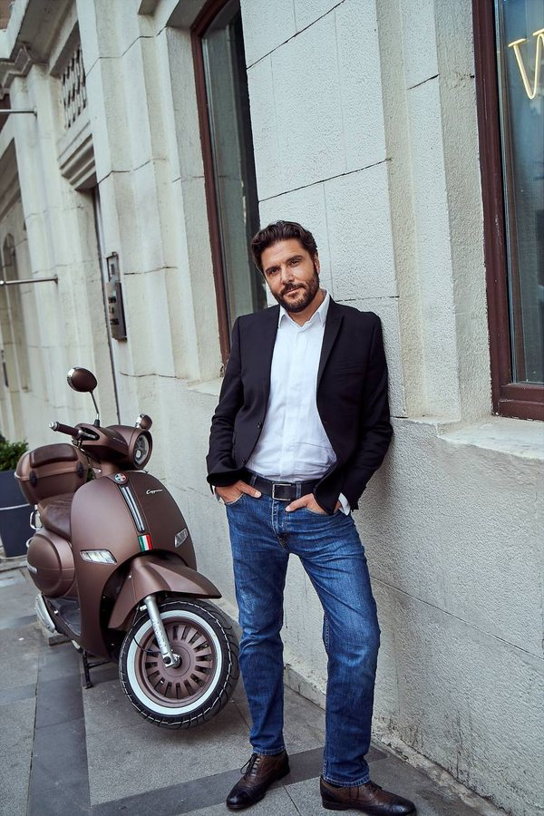

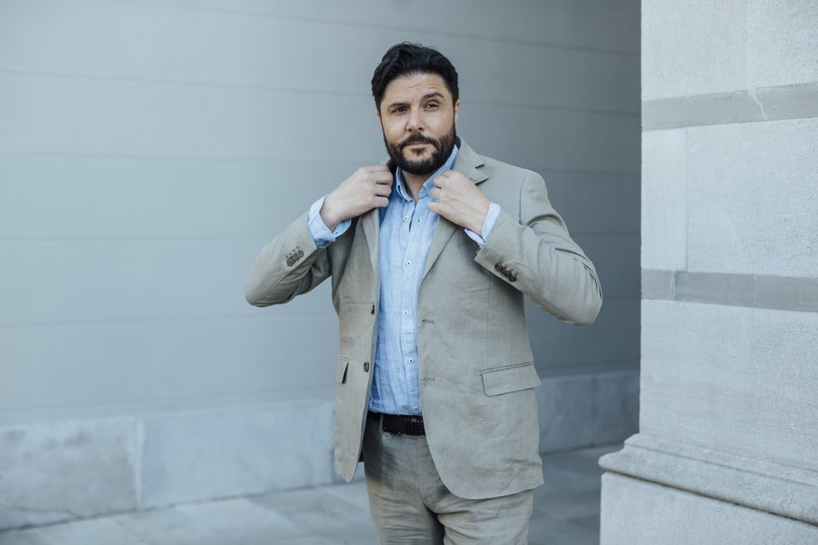

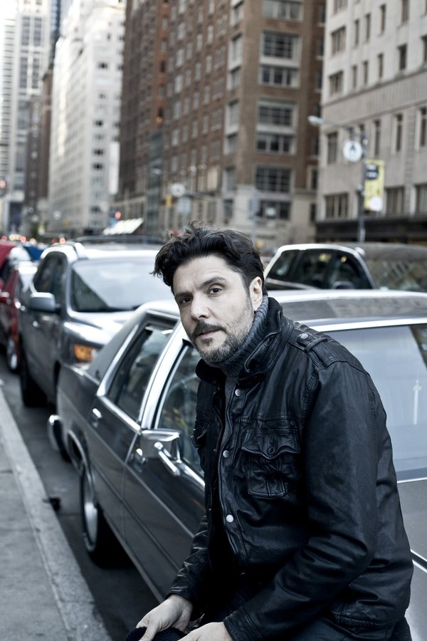
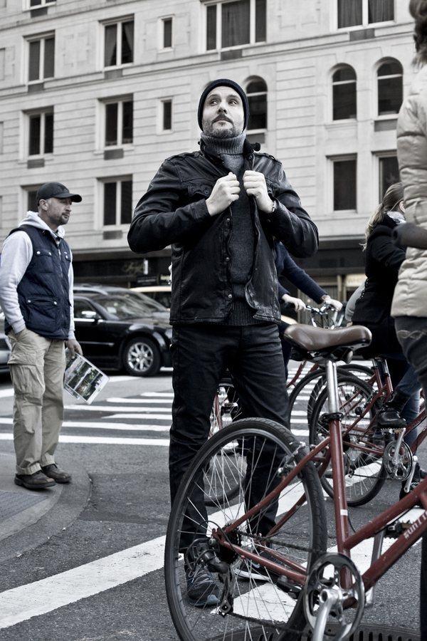
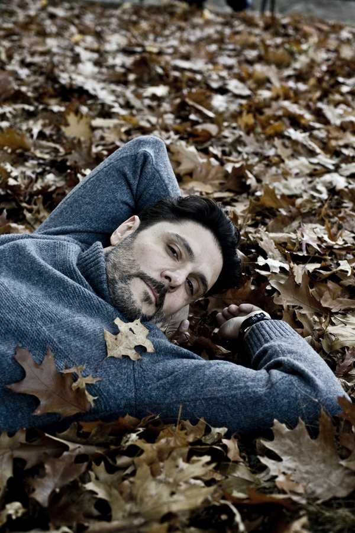

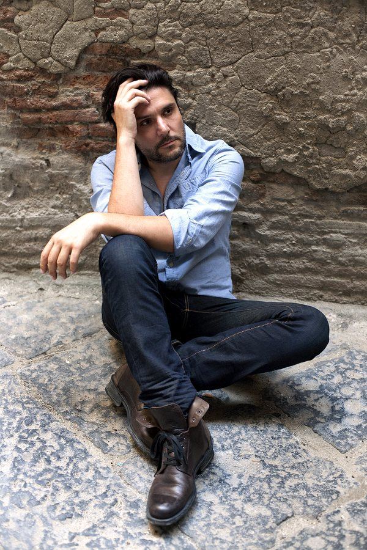
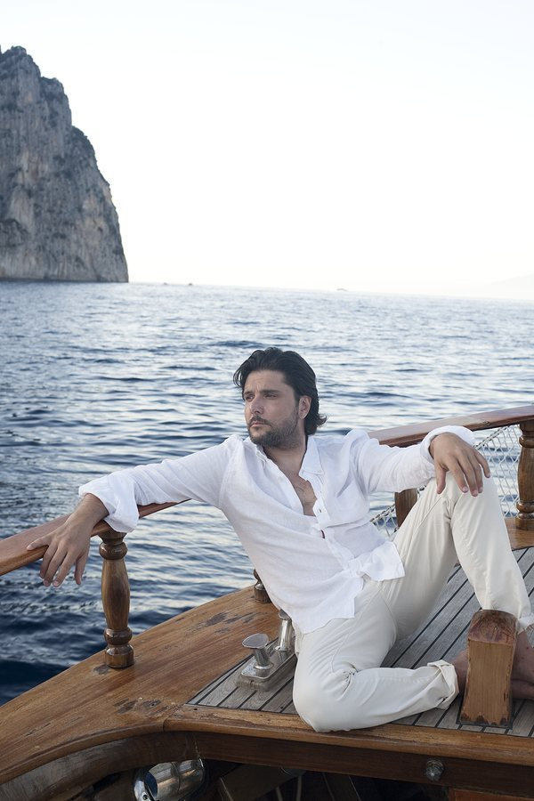


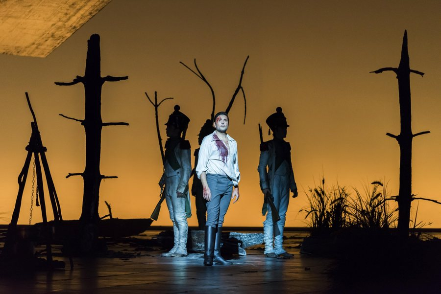
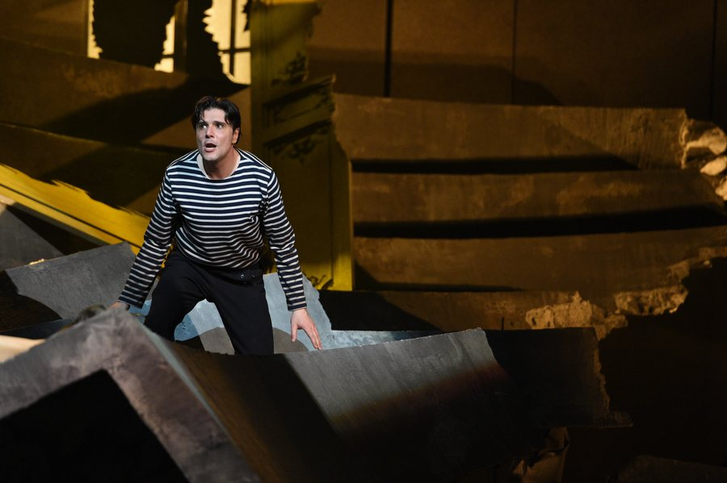

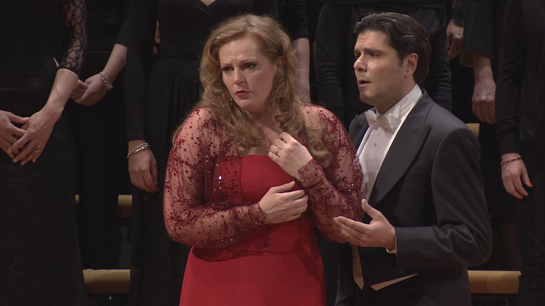